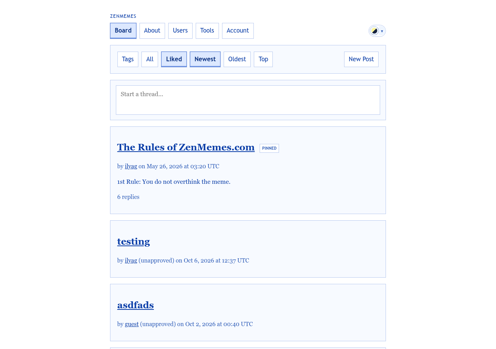
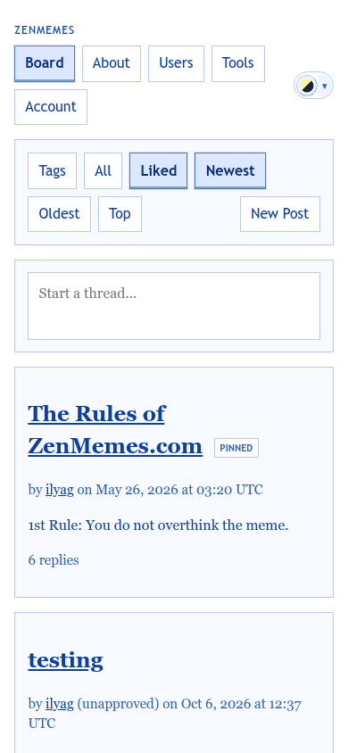

The home page and the most visited screen. Its job is to show what is new and make posting one tap away.
templates/pages/board.php · partials/thread_card.php · partials/board_pagination_nav.php
docs/reference/pagination.md, so the position stays in the URL.

Pinned
Latest
communication should be instant, and near-free.
Threads you like will show up here.
Show all threads